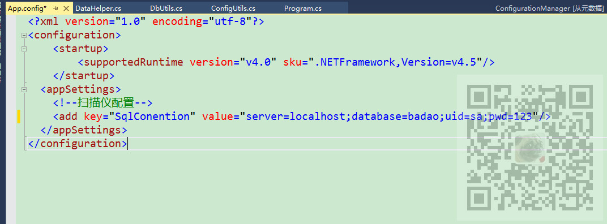
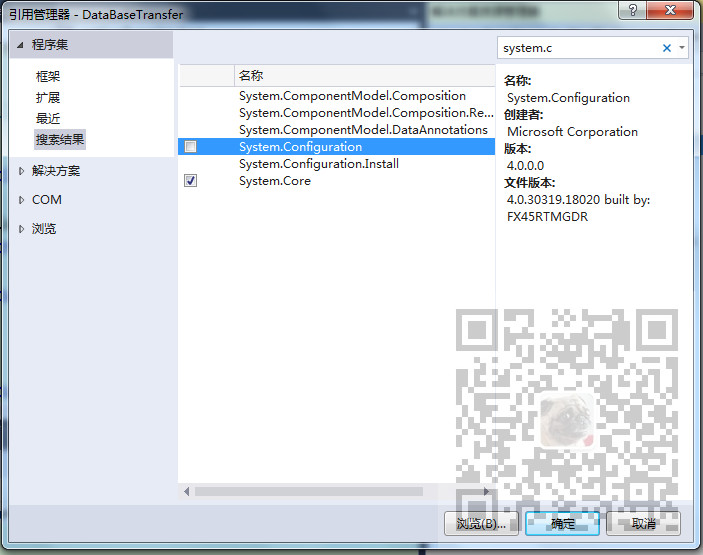
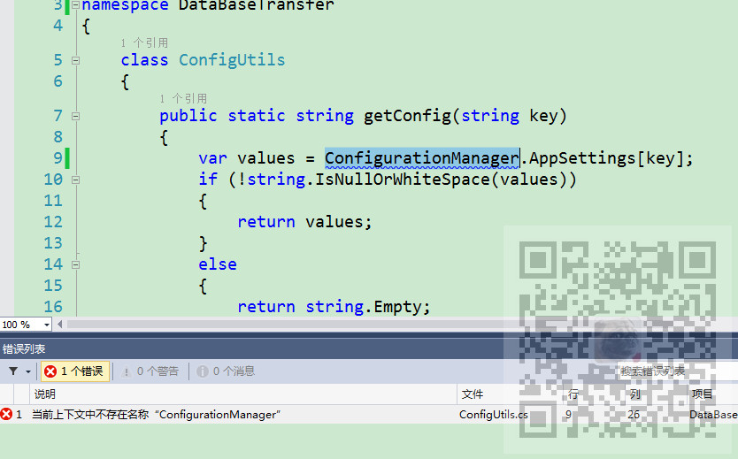

原文出处:本文由博客园博主霸道流氓提供。
原文连接:https://www.cnblogs.com/badaoliumangqizhi/p/12010788.html
原文连接:https://www.cnblogs.com/badaoliumangqizhi/p/12010788.html
场景
在新建一个程序后，项目中会有一个默认配置文件App.config
一般会将一些配置文件信息，比如连接数据库的字符串等信息存在此配置文件中。
怎样在代码中获取自己配置的键值对信息。
注：
博客主页：
https://blog.csdn.net/badao_liumang_qizhi
关注公众号
霸道的程序猿
获取编程相关电子书、教程推送与免费下载。
实现
双击App.config，并添加如下格式的信息
<?xml version="1.0" encoding="utf-8"?>
<configuration>
<startup>
<supportedRuntime version="v4.0" sku=".NETFramework,Version=v4.5"/>
</startup>
<appSettings>
<!--扫描仪配置-->
<add key="SqlConention" value="server=localhost;database=badao;uid=sa;pwd=123"/>
</appSettings>
</configuration>
然后右击项目引用，添加配置引用

因为如果只是添加了using System.Configuration;
则会提示：

在需要获取配置文件中设置的地方使用
var values = ConfigurationManager.AppSettings["SqlConention"];
获取，其中字符串的内容就要与配置文件中的key所对应 。